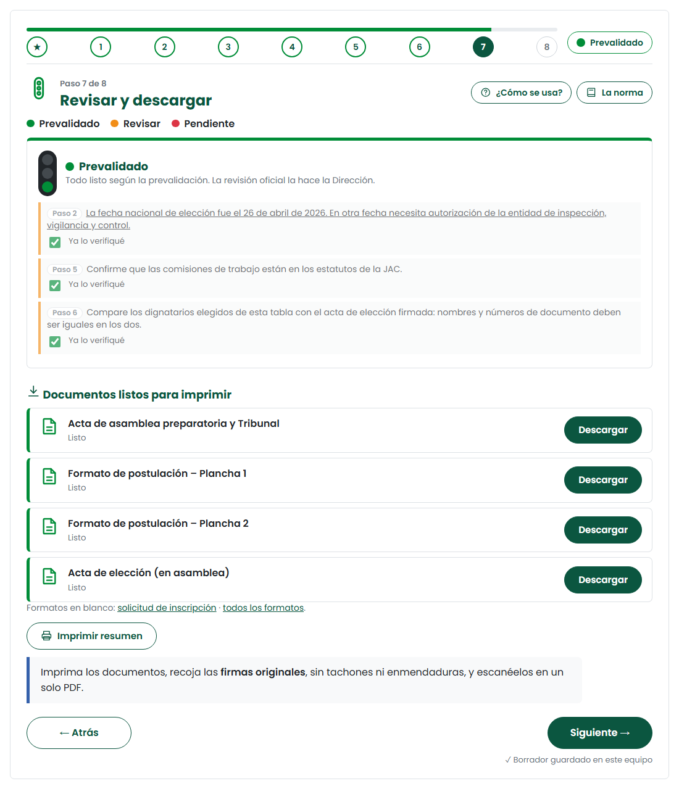
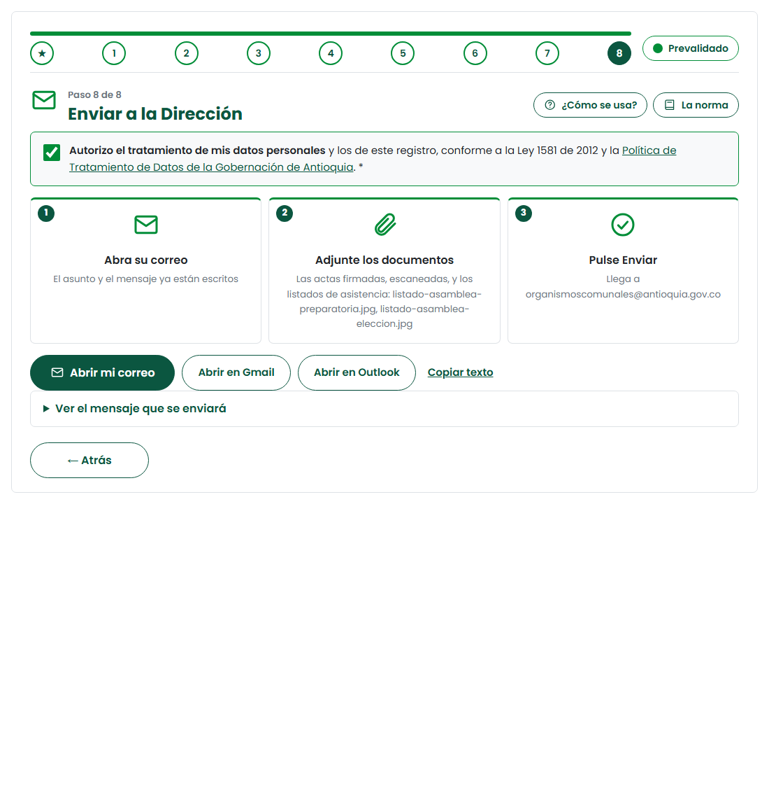

Paso 7 · Revisar y descargar

- 🟢 Prevalidado: cumple lo que la herramienta puede revisar. 🟡 Revisar: confirme el aviso. 🔴 Pendiente: corrija.
- Cada documento se descarga cuando sus pasos están en verde: acta del Tribunal, planchas y acta de elección.
- Imprima, recoja firmas originales y escanee las actas en un solo PDF.

Verde no significa trámite aprobado: la revisión oficial la hace la Dirección. Entregue sin tachones ni enmendaduras.
Paso 8 · Enviar a la Dirección

- Marque la autorización de datos personales (Ley 1581 de 2012).
- Pulse «Abrir mi correo» (o Gmail u Outlook). El asunto y el mensaje ya están escritos; el asunto dice si es nueva o subsanación y la versión.
- Adjunte las actas escaneadas y las fotos de los listados firmados y pulse Enviar.
El correo llega a organismoscomunales@antioquia.gov.co y allí se radica en MERCURIO. SURCO es solo para consultar. Guarde su código de registro y descargue el comprobante. Si la Dirección pide corregir algo, vuelva a la herramienta y toque «Hacer una subsanación»: se conservan los datos y se crea la versión 2.
📖 La norma dice
Se radican, sin enmendaduras: solicitud de inscripción, acta y listado de la asamblea preparatoria, acta y listado de la elección, formato de planchas o listas y, si aplica, certificado de parentesco. Manual Comunal, p. 50
✅ Antes de terminar
- El semáforo está en verde.
- Los documentos tienen firmas originales y no tienen tachones.
- Envié el correo con las actas y los listados adjuntos.
- Guardé el código de registro y el comprobante.